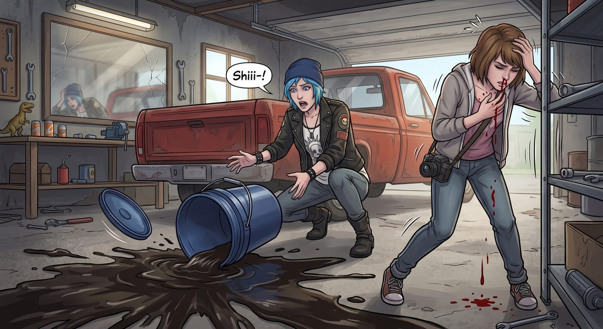

退潮

一、越來越短的時間
自從那晚在皮卡後斗聽完那首歌之後,Max 隱約察覺到,自己的能力好像變得不太一樣了。
一開始只是細微的差異——回溯的時間,似乎沒有以前那麼「聽話」了。以前她想倒流一分鐘,基本上都能精準控制在誤差幾秒內;但這陣子,她發現自己越來越難掌握那個「度」,常常是拚盡全力想拉長時間,結果只換來短短幾秒鐘的回溯,伴隨著比以前劇烈得多的頭痛和鼻血。
她沒有跟任何人提起這件事,只是默默記在心裡,連 Kenji 那通電話裡的猜想,也漸漸從一種抽象的假設,變成一種正在她身上真實發生的事。
二、機油事件
那天下午,Chloe 在車庫裡幫皮卡換機油,一個沒拿穩,整整一大桶尚未使用的新機油,「哐」地一聲砸在地上,桶蓋應聲彈開,濃稠深色的油液瞬間在水泥地上蔓延開一大片。
「靠!」Chloe 驚呼一聲,下意識地伸手去扶那個已經傾倒的桶子。
站在一旁的 Max,幾乎是本能反應地集中精神,發動了那份熟悉的能力——以前這種程度的意外,她閉著眼睛都能輕鬆倒流回去,提前幾秒讓 Chloe 把桶子放穩。
一陣熟悉的暈眩感襲來,眼前的畫面開始扭曲、倒退——
然後,毫無預警地,那股力量像是被猛地掐斷了一樣,戛然而止。
Max 猛地睜眼,眼前發黑,一股熱流瞬間從鼻腔湧出,滴滴答答地砸在她自己的衣領上。她伸手扶住旁邊的工具架,才勉強站穩身形。
而地上——那桶機油,依然穩穩當當地、原封不動地,正好倒在剛才那個位置,油液正緩緩地朝四周擴散。
Chloe 拿著抹布衝過來,一邊手忙腳亂地想擦乾淨地上的油漬,一邊被鼻血直流的 Max 嚇得魂飛魄散。
「Max!妳的鼻子——」
「我沒事,」Max 捂著鼻子,聲音有點發悶,語氣裡卻藏不住一絲難堪的荒謬感,「我剛才想倒流,結果……」
「結果怎樣?」
「結果好像,」Max 苦笑了一下,「只倒流了一秒半左右,機油正好剛砸下去,連提前伸手都來不及。」
Chloe 舉著抹布,愣了兩秒,一時哭笑不得。
「所以說,」她難以置信地開口,「妳剛才發功,拚到流鼻血,結果只是為了讓我親眼再看一遍,它到底是怎麼灑出來的?」
「……」Max 蹲在地上,一手捂著鼻子,一手撐著額頭,又想反駁又覺得這個描述精準得沒法反駁,最後只能無力地嘆了口氣。
「這功能,」她自嘲地喃喃,「現在大概只值三成新了。」
Chloe 看著她這副狼狽又哭笑不得的模樣,原本的驚慌漸漸被一種說不清的心疼取代,蹲下身,伸手替她擦掉鼻血,動作放得很輕。
「下次,」她低聲說,語氣裡帶著少見的認真,「別再為了這種小事硬拚了。」
Max 沒有接話,只是任由她小心翼翼地替自己清理著,眼神卻飄向那攤還沒擦乾淨的機油漬,若有所思。
三、扳手驚魂
幾天後,Chloe 又鑽進車底,修理皮卡老舊的底盤結構,Max 照例坐在一旁,一邊看書一邊隨手遞工具。
「遞我那支十七釐米的套筒扳手。」Chloe 的聲音從車底傳出來,帶著悶悶的回音。
Max 應了一聲,隨手把工具箱裡那支沉重的金屬扳手遞了過去。
意外發生在下一秒——Chloe 的手一滑,那支扳手脫手飛出,不偏不倚地朝著她自己的臉正上方墜落,眼看就要重重砸在她的鼻梁上。
Max 幾乎沒有時間思考,那份殘存的、微弱到近乎直覺的預感,只讓她的身體先於意識做出反應——她猛地伸手,精準地在扳手墜落的軌跡上,一把接住,堪堪停在距離 Chloe 鼻尖不到兩公分的地方。
車底傳來 Chloe 倒吸一口涼氣的聲音。
「……謝了。」她從車底滑出來,臉色還有點發白,看著 Max 手裡那支穩穩被接住的扳手,又看了看她額角滲出的一層薄汗。
「這次沒流鼻血。」Max 有點意外地檢查了一下自己的狀態,語氣裡帶著點如釋重負,「感覺不太一樣,好像只是……一種很短的直覺,不到一秒,身體自己就先動了。」
「不管是不是超能力,」Chloe 坐起身,一把將她攬進懷裡,聲音有點發緊,「妳這次是真的救了我一命。」
Max 靠在她懷裡,能感覺到她的心跳跳得比平常快了不少。
「我也不確定,」她低聲說,聲音裡帶著一絲連自己都說不清的困惑,「這到底還算不算是『超能力』了。感覺越來越像,只是我自己的反射神經而已。」
Chloe 沒有回答,只是把她抱得更緊了一些,下巴抵在她的髮頂,誰都沒有再提起這件事背後,那個誰都不敢輕易觸碰的、關於「消失」的猜測。
車庫裡只剩下引擎的餘溫和兩人交疊的呼吸聲,那支被及時接住的扳手,靜靜地躺在水泥地上,反射著頭頂日光燈的微光。